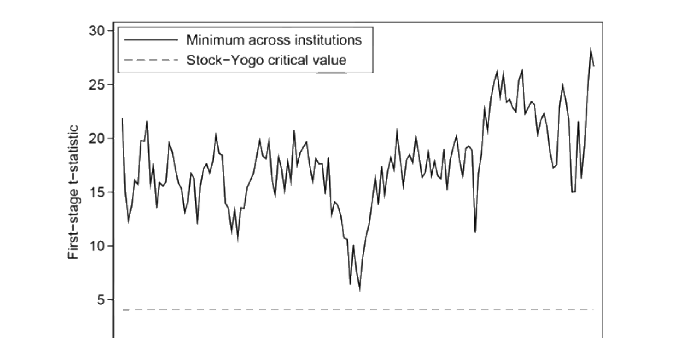
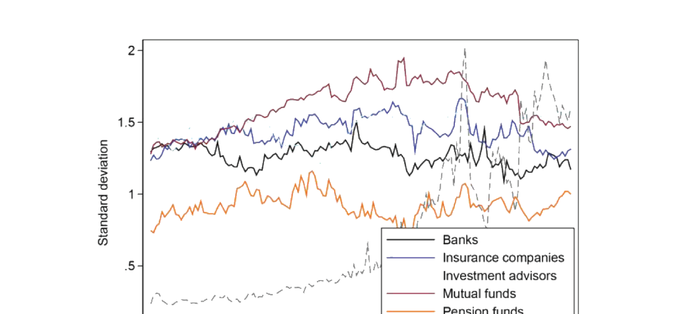
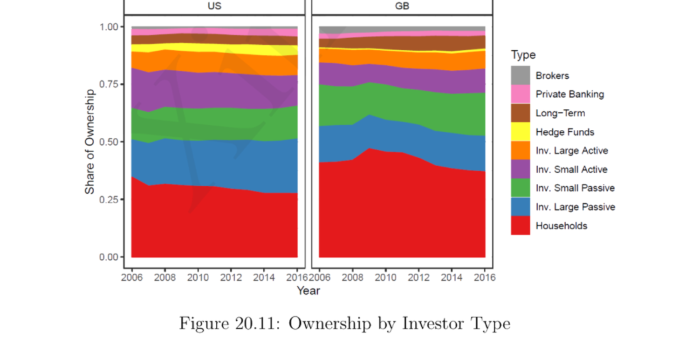

20. Demand and Asset Pricing
本章介绍 Koijen-Yogo 需求系统 (demand system) 方法：不再把"公司特征是定价因子"当作既定事实去揭示，而是从源头建模——投资者对资产的需求如何由公司特征决定，再让市场出清内生地决定价格。§20.1 (Koijen-Yogo 2019a) 在对数效用、卖空/不借贷约束下推导基于特征的需求（组合权重是特征的函数 + 潜在需求 (latent demand) 残差），用 13F 机构持仓数据、以"假想指数基金"构造对数市值的工具变量做识别，估计各特征的需求弹性并分解股票收益方差。§20.2 (Koijen-Yogo 2019b) 推广到 36 国全球需求系统，把汇率、长期收益率、股价分解为宏观/政策/潜在需求三源。§20.3 (Koijen et al. 2019) 用投资者层面持仓比较不同投资者类型（按规模、主动度）对价格形成的相对重要性。
This chapter introduces the Koijen-Yogo demand system approach: rather than taking "firm characteristics are pricing factors" as a given to be unveiled, it models from the source — how investors' demand for assets is determined by firm characteristics, with market clearing endogenously pinning down prices. §20.1 (Koijen-Yogo 2019a) derives characteristics-based demand under log utility with short-sale/no-borrow constraints (portfolio weights are functions of characteristics plus a latent demand residual), uses 13F institutional-holdings data and a "hypothetical index fund" instrument for log market equity for identification, estimates demand elasticities for each characteristic, and decomposes the variance of stock returns. §20.2 (Koijen-Yogo 2019b) extends to a 36-country global demand system, decomposing exchange rates, long-term yields, and equity prices into macro/policy/latent-demand sources. §20.3 (Koijen et al. 2019) uses investor-level holdings to compare the relative importance of different investor types (by size, active share) in price formation.
20.1 Demand System Approach: Koijen and Yogo (2019a)
20.1.1 Key Points
文献惯例是把公司特征当作定价因子的既成事实去揭示；少有论文从"什么决定投资者对资产的需求"出发，去构造一个以公司特征为因子的因子结构。本文正是这样做：投资者需求有因子结构，因子是公司特征。用工具变量法估计该基于特征的需求系统。用美国股票数据展示机构在价格、波动率与可预测性中的作用。
20.1.2 Setup
记号（小写为对数）：\(s_t(n)\equiv\ln S_t(n)\)（股数）、\(p_t(n)\equiv\ln P_t(n)\)（价格）、\(\mathrm{me}_t(n)\equiv\ln\mathrm{ME}_t(n)\)（市值）、\(r_t(n)\equiv\ln R_t(n)\)（毛收益），粗体为 \(N\times1\) 向量。设共 \(K\) 个基本面（特征）：\(N\times K\) 矩阵 \(\mathbf x_t\) 第 \(n\) 行 \(\mathbf x_t(n)\) 是公司 \(n\) 在 \(t\) 的特征向量，第 \(K\) 个特征恒为 1（\(x_{K,t}(n)=1\)）。
投资者 \(i=1,\dots,I\) 在 \(t\) 把财富 \(A_{i,t}\) 分配到资产集 \(\mathcal N_{i,t}\subseteq\{1,\dots,N\}\) 与一个外部资产。\(\mathcal N_{i,t}\) 是投资者 \(i\) 面对的投资机会集（如指数基金只能投某指数的成分股）；外部资产记为 0，毛收益 \(R_t(0)\)。\(\mathcal N_{i,t}\) 维权重向量 \(\mathbf w_{i,t}\)。所有投资者对终端财富有同样的对数效用，主观期望记 \(\mathbb E_{i,t}[\cdot]\)。
假设： 股数、红利、所有公司特征均外生；只有资产价格由模型内生决定。
20.1.3 Framework
每个投资者 \(i\) 解 (20.1)–(20.3)：\(\max_{\mathbf w_{i,t}}\mathbb E_{i,t}[\ln A_{i,T}]\)，s.t. 跨期预算约束 \(A_{i,t+1}=A_{i,t}[R_{t+1}(0)+\mathbf w_{i,t}'(\mathbf R_{t+1}-R_{t+1}(0)\mathbf 1)]\)、卖空约束 \(\mathbf w_{i,t}\geq\mathbf 0\)、不借贷约束 \(\mathbf 1'\mathbf w_{i,t}<1\)。拉格朗日 (20.4)（乘子 \(\boldsymbol\Lambda_{i,s}\) 为卖空约束、\(\lambda_{i,s}\) 为不借贷约束）。
记投资者 \(i\) 的主观对数超额收益（相对外部资产）条件均值与协方差 \(\boldsymbol\mu_{i,t}\)、\(\boldsymbol\Sigma_{i,t}\)，由对数正态得 (20.5)：\(\boldsymbol\mu_{i,t}=\mathbb E_{i,t}[\mathbf r_{t+1}-r_{t+1}(0)\mathbf 1]+\boldsymbol\sigma_{i,t}^2\)（\(\boldsymbol\sigma_{i,t}^2\) 为 \(\boldsymbol\Sigma_{i,t}\) 对角）。把资产分两组：第 1 组卖空约束不绑定、第 2 组绑定，故 \(\mathbf w_{i,t}=(\mathbf w_{i,t}^{(1)},\mathbf 0)'\)。对 \(\mathbf w_{i,t}\) 取一阶条件 (20.6)–(20.10)，得近似组合解 (20.11)：
The literature conventionally unveils firm characteristics as a given pricing fact; few papers start from "what determines investors' demand for assets" to construct a factor structure with firm characteristics. This paper does exactly that: investor demand has a factor structure with firm characteristics as factors. It estimates this characteristics-based demand system by instrumental variables, and uses US stock data to show the role of institutions in prices, volatility, and predictability.
20.1.2 Setup
Notation (lowercase = log): \(s_t(n)\equiv\ln S_t(n)\) (shares), \(p_t(n)\equiv\ln P_t(n)\) (price), \(\mathrm{me}_t(n)\equiv\ln\mathrm{ME}_t(n)\) (market equity), \(r_t(n)\equiv\ln R_t(n)\) (gross return), bold = \(N\times1\) vectors. There are \(K\) fundamentals (characteristics): the \(N\times K\) matrix \(\mathbf x_t\)'s row \(n\), \(\mathbf x_t(n)\), is firm \(n\)'s characteristic vector at \(t\), with the \(K\)-th characteristic always 1 (\(x_{K,t}(n)=1\)).
Investor \(i=1,\dots,I\) allocates wealth \(A_{i,t}\) at \(t\) across the asset set \(\mathcal N_{i,t}\subseteq\{1,\dots,N\}\) and an outside asset. \(\mathcal N_{i,t}\) is investor \(i\)'s investment opportunity set (e.g. an index fund can only invest in an index's constituents); the outside asset is 0 with gross return \(R_t(0)\). The \(\mathcal N_{i,t}\)-dimensional weight vector \(\mathbf w_{i,t}\). All investors have the same log utility over terminal wealth, with subjective expectation \(\mathbb E_{i,t}[\cdot]\).
Assumptions: shares outstanding, dividends, and all firm characteristics are exogenous; only asset prices are endogenously determined by the model.
20.1.3 Framework
Each investor \(i\) solves (20.1)–(20.3): \(\max_{\mathbf w_{i,t}}\mathbb E_{i,t}[\ln A_{i,T}]\), s.t. the intertemporal budget constraint \(A_{i,t+1}=A_{i,t}[R_{t+1}(0)+\mathbf w_{i,t}'(\mathbf R_{t+1}-R_{t+1}(0)\mathbf 1)]\), short-sale constraint \(\mathbf w_{i,t}\geq\mathbf 0\), and no-borrow constraint \(\mathbf 1'\mathbf w_{i,t}<1\). Lagrangian (20.4) (multiplier \(\boldsymbol\Lambda_{i,s}\) on short-sale, \(\lambda_{i,s}\) on no-borrow).
Write investor \(i\)'s subjective conditional mean and covariance of log excess returns (vs. outside asset) as \(\boldsymbol\mu_{i,t}\), \(\boldsymbol\Sigma_{i,t}\); log-normality gives (20.5): \(\boldsymbol\mu_{i,t}=\mathbb E_{i,t}[\mathbf r_{t+1}-r_{t+1}(0)\mathbf 1]+\boldsymbol\sigma_{i,t}^2\) (\(\boldsymbol\sigma_{i,t}^2\) the diagonal of \(\boldsymbol\Sigma_{i,t}\)). Split assets into two groups: group 1 (short-sale not binding) and group 2 (binding), so \(\mathbf w_{i,t}=(\mathbf w_{i,t}^{(1)},\mathbf 0)'\). The f.o.c. w.r.t. \(\mathbf w_{i,t}\) (20.6)–(20.10) gives the approximate portfolio solution (20.11):
$$\mathbf w_{i,t}^{(1)}\approx\left(\boldsymbol\Sigma_{i,t}^{(1,1)}\right)^{-1}\left(\boldsymbol\mu_{i,t}^{(1)}-\lambda_{i,t}\mathbf 1\right).\tag{20.11}$$
无摩擦（无卖空、无借贷约束，\(\boldsymbol\Lambda_{i,t}=\mathbf 0\)、\(\lambda_{i,t}=0\)）时 (20.10) 退化为 \(\mathbb E_{i,t}[\frac{A_{i,t}}{A_{i,t+1}}\mathbf R_{t+1}]=\mathbf 1\)。
基于特征的需求。 设投资者 \(i\) 对资产 \(n\) 的信息集 \(\mathbf x_{i,t}(n)=(\mathrm{me}_t(n),\mathbf x_t(n),\ln(\epsilon_{i,t}(n)))'\)，\(\epsilon_{i,t}(n)\) 是投资者 \(i\) 观测到、但计量经济学家观测不到的一维特征。设 \(\mathbf y_{i,t}(n)\) 为 \(\mathbf x_{i,t}(n)\) 的 \(M\) 阶多项式向量。假设收益单因子结构、协方差 \(\boldsymbol\Sigma_{i,t}=\boldsymbol\Gamma_{i,t}\boldsymbol\Gamma_{i,t}'+\gamma_{i,t}\mathbf I\)（\(\boldsymbol\Gamma_{i,t}(n)\) 为载荷、\(\gamma_{i,t}\) 为感知特异方差），且期望超额收益与载荷线性于 \(\mathbf y_{i,t}(n)\) (20.12)、(20.13)。则卖空不绑定资产的最优权重 (20.14)：\(w_{i,t}(n)=\mathbf y_{i,t}(n)'\boldsymbol\Pi_{i,t}+\pi_{i,t}\)，其中 (20.15)、(20.16) 给出 \(\boldsymbol\Pi_{i,t},\pi_{i,t}\)（跨资产不变）。故投资者 \(i\) 横截面需求差异只来自公司特征 \(\mathbf y_{i,t}(n)\)。整理为指数形式 (20.17)：
In the frictionless case (no short-sale, no borrow constraint, \(\boldsymbol\Lambda_{i,t}=\mathbf 0\), \(\lambda_{i,t}=0\)), (20.10) reduces to \(\mathbb E_{i,t}[\frac{A_{i,t}}{A_{i,t+1}}\mathbf R_{t+1}]=\mathbf 1\).
Characteristics-based demand. Let investor \(i\)'s info set for asset \(n\) be \(\mathbf x_{i,t}(n)=(\mathrm{me}_t(n),\mathbf x_t(n),\ln(\epsilon_{i,t}(n)))'\), where \(\epsilon_{i,t}(n)\) is a one-dimensional characteristic observed by investor \(i\) but not the econometrician. Let \(\mathbf y_{i,t}(n)\) be the \(M\)-th order polynomial vector of \(\mathbf x_{i,t}(n)\). Assume returns have a one-factor structure, covariance \(\boldsymbol\Sigma_{i,t}=\boldsymbol\Gamma_{i,t}\boldsymbol\Gamma_{i,t}'+\gamma_{i,t}\mathbf I\) (\(\boldsymbol\Gamma_{i,t}(n)\) the loading, \(\gamma_{i,t}\) perceived idiosyncratic variance), and expected excess returns and loadings linear in \(\mathbf y_{i,t}(n)\) (20.12), (20.13). Then the optimal weight on short-sale-non-binding assets (20.14): \(w_{i,t}(n)=\mathbf y_{i,t}(n)'\boldsymbol\Pi_{i,t}+\pi_{i,t}\), with (20.15), (20.16) giving \(\boldsymbol\Pi_{i,t},\pi_{i,t}\) (constant across assets). So investor \(i\)'s cross-sectional demand variation comes only from firm characteristics \(\mathbf y_{i,t}(n)\). Rewriting in exponential form (20.17):
$$\delta_{i,t}(n)=\frac{w_{i,t}(n)}{w_{i,t}(0)}=\exp\left\{\beta_{0,i,t}\mathrm{me}_t(n)+\sum_{k=1}^{K-1}\beta_{k,i,t}x_{k,t}(n)+\beta_{K,i,t}\right\}\epsilon_{i,t}(n),\tag{20.17}$$
\(\epsilon_{i,t}(n)\) 称潜在需求 (latent demand)：来自投资者 \(i\) 观测到、计量经济学家观测不到的特征。卖空不绑定资产的权重 \(w_{i,t}(n)=\frac{\delta_{i,t}(n)}{\sum_{m\in\mathcal N_{i,t}}\delta_{i,t}(m)}\)、\(w_{i,t}(0)=\frac{\delta_{i,t}(0)}{\sum_{m\in\mathcal N_{i,t}}\delta_{i,t}(m)}\)。
Remark 20.1. 关键要点是个体需求（组合权重）基于其特征。
市场出清。 \(\mathrm{ME}_t(n)=\sum_{i=1}^I A_{i,t}w_{i,t}(n)\) (20.18)，向量形式取对数得 (20.19)：\(\mathbf p_t=\ln(\sum_{i=1}^I A_{i,t}\mathbf w_{i,t}(\mathbf p_t))-\mathbf s_t\equiv\mathbf f(\mathbf p_t)\)，即 \(\mathbf p_t=\mathbf f(\mathbf p_t)\) 内生定价（\(\mathbf w_{i,t}\) 是对数价格 \(\mathbf p_t\) 的函数）。
20.1.4 Empirical Analysis
数据： CRSP 月度（NYSE/AMEX/Nasdaq 普通股）+ Compustat（会计数据，滞后 6–18 月以保证公开）+ Thomson Reuters 13F 机构持仓（管理资产超 $1 亿须申报，仅多头、不报债券）。机构分六组：银行、保险、投资顾问、共同基金、养老金、其他 13F。投资机会集 = 过去 11 季持有过的股票。
\(\epsilon_{i,t}(n)\) is called latent demand: it comes from characteristics observed by investor \(i\) but not the econometrician. Weights on short-sale-non-binding assets \(w_{i,t}(n)=\frac{\delta_{i,t}(n)}{\sum_{m\in\mathcal N_{i,t}}\delta_{i,t}(m)}\), \(w_{i,t}(0)=\frac{\delta_{i,t}(0)}{\sum_{m\in\mathcal N_{i,t}}\delta_{i,t}(m)}\).
Remark 20.1. The key takeaway is that an individual's demand (portfolio weight) is based on its characteristics.
Market clearing. \(\mathrm{ME}_t(n)=\sum_{i=1}^I A_{i,t}w_{i,t}(n)\) (20.18); in vector log form (20.19): \(\mathbf p_t=\ln(\sum_{i=1}^I A_{i,t}\mathbf w_{i,t}(\mathbf p_t))-\mathbf s_t\equiv\mathbf f(\mathbf p_t)\), i.e. \(\mathbf p_t=\mathbf f(\mathbf p_t)\) endogenously prices (\(\mathbf w_{i,t}\) being a function of log prices \(\mathbf p_t\)).
20.1.4 Empirical Analysis
Data: monthly CRSP (NYSE/AMEX/Nasdaq common shares) + Compustat (accounting, lagged 6–18 months for public availability) + Thomson Reuters 13F institutional holdings (managers with over \$100M must file; long-only, no bonds). Institutions grouped into six: banks, insurance companies, investment advisors, mutual funds, pension funds, and other 13F. The investment opportunity set = stocks held in the previous 11 quarters.
识别（内生性）。 \(\mathrm{me}_t(n)\) 在 (20.17) 右端是内生的（价格内生）。识别假设 (20.20)：\(\mathbb E[\epsilon_{i,t}(n)\mid\mathrm{me}_t(n),\mathbf x_t(n)]=1\)。工具变量： 构造一个"假想指数基金 \(i\)"——其规模与投资范围与 Vanguard 相同、组合权重为市场权重；用它构造对数市值的工具 (20.22)：\(\widehat{\mathrm{me}}_t(n)=\ln(\sum_{j\neq i}A_j\frac{\mathbb 1_j(n)}{1+\sum_{m=1}^N\mathbb 1_j(n)})\)，仅由机构持仓数据（投资机会集 \(\mathbb 1_j(n)\)）决定，在识别假设下外生。第一阶段：对数市值对工具的回归很强（最小 \(t\) 统计量远超 Stock-Yogo 临界值 4.05），见 Figure 20.2。
Identification (endogeneity). \(\mathrm{me}_t(n)\) on the RHS of (20.17) is endogenous (prices are endogenous). Identifying assumption (20.20): \(\mathbb E[\epsilon_{i,t}(n)\mid\mathrm{me}_t(n),\mathbf x_t(n)]=1\). Instrument: construct a "hypothetical index fund \(i\)" — same size and universe as Vanguard, portfolio weights equal to market weights; use it to build an instrument for log market equity (20.22): \(\widehat{\mathrm{me}}_t(n)=\ln(\sum_{j\neq i}A_j\frac{\mathbb 1_j(n)}{1+\sum_{m=1}^N\mathbb 1_j(n)})\), determined only by institutional-holdings data (the opportunity set \(\mathbb 1_j(n)\)), exogenous under the identifying assumption. First stage: the regression of log market equity on the instrument is strong (the minimum \(t\)-statistic far exceeds the Stock-Yogo critical value 4.05), see Figure 20.2.

图 20.2：跨机构最小的第一阶段 \(t\) 统计量始终远高于 Stock-Yogo 临界值（虚线约 4.05），说明工具很强。
假想指数基金的验证。 该基金权重 = 市值权重 (20.24)：\(\frac{w_{i,t}(n)}{w_{i,t}(0)}=\exp\{(\mathrm{me}_t(n)-\mathrm{be}_t(n))+\mathrm{be}_t(n)+\beta_{K,i,t}\}\)。(20.24) 理论上应给出：对数市值-账面比系数 = 1、对数账面权益系数 = 1、其他特征系数 = 0。经验上确实如此（Figure 20.3），印证方法。再对全部六组机构重复估计（Figure 20.4），并算各组潜在需求的横截面标准差（Figure 20.5）。
Figure 20.2: the minimum first-stage \(t\)-statistic across institutions stays far above the Stock-Yogo critical value (dashed, about 4.05), so the instrument is strong.
Validating the hypothetical index fund. This fund's weight = market weight (20.24): \(\frac{w_{i,t}(n)}{w_{i,t}(0)}=\exp\{(\mathrm{me}_t(n)-\mathrm{be}_t(n))+\mathrm{be}_t(n)+\beta_{K,i,t}\}\). (20.24) theoretically should give: coefficient 1 on log market-to-book-equity ratio, 1 on log book equity, 0 on other characteristics. Empirically this holds (Figure 20.3), corroborating the methodology. The same estimation is repeated for all six institution groups (Figure 20.4), and the cross-sectional standard deviation of latent demand for each group is computed (Figure 20.5).

图 20.5：六组机构潜在需求 \(\epsilon_{i,t}(n)\) 的横截面标准差时间序列（共同基金最高、家庭最低）。
方差分解（Figure 20.6）。 把股票收益方差分解到供给侧与需求侧：
| 来源 | 占方差 % |
|---|---|
| 供给： 股数 | 2.1 |
| 股票特征 | 9.7 |
| 红利 | 0.4 |
| 需求： 管理资产 | 2.3 |
| 特征系数 | 4.7 |
| 潜在需求·外延边际 | 23.3 |
| 潜在需求·内涵边际 | 57.5 |
可见潜在需求（外延 + 内涵边际，合计约 81%）主导了股票收益的方差。
20.1.5 Contribution
文献惯例把公司特征当作既成定价因子去揭示；本文从源头建模"什么决定投资者对资产的需求"。该框架可回答如"银行业政策变化如何影响市场价格、哪类机构贡献了定价异象"等结构性反事实问题。
20.1.6 Discussion（批评）
- 把股数、红利、所有公司特征设为外生有问题：谈需求时不应忽略供给效应；股数与红利可被资产需求反向决定，故应内生；其他公司特征也或多或少被市场需求塑造——本应默认内生。
- 投资机会集的度量（为何聚焦过去 11 季？）不太有说服力。
- 识别假设很可能被违反，故经验结果可疑。
- 潜在需求可能只是大量被计量经济学家遗漏的可观测因子的残差，未必是真正的"潜在"因子。
- 若机构投资者的横截面任务高度相似，则由"任务外生"驱动的横截面工具变量变异可能不足。
Figure 20.5: time series of the cross-sectional standard deviation of latent demand \(\epsilon_{i,t}(n)\) for the six groups (mutual funds highest, households lowest).
Variance decomposition (Figure 20.6). Decomposing the variance of stock returns into supply and demand sides:
| Source | % of Variance |
|---|---|
| Supply: shares outstanding | 2.1 |
| stock characteristics | 9.7 |
| dividend yield | 0.4 |
| Demand: assets under management | 2.3 |
| coefficients on characteristics | 4.7 |
| latent demand, extensive margin | 23.3 |
| latent demand, intensive margin | 57.5 |
So latent demand (extensive + intensive margins, totaling about 81%) dominates the variance of stock returns.
20.1.5 Contribution
The literature conventionally unveils firm characteristics as a given pricing factor; this paper models from the source "what determines investors' demand for assets." The framework can answer structural counterfactuals like "how would a policy change in the banking sector affect market prices, and which type of institution contributes to pricing anomalies."
20.1.6 Discussion (critiques)
- Setting shares, dividends, and all firm characteristics exogenous is problematic: one should not ignore the supply effect when discussing demand; shares and dividends can be reverse-determined by asset demand and so should be endogenous; other firm characteristics are also shaped by market demand to some degree — so endogeneity should be the default.
- The investment-opportunity-set measure (why focus on the previous 11 quarters?) is not very convincing.
- The identifying assumption is very likely violated, so the empirical results are suspect.
- Latent demand may just be the residual from many observable factors left out by the econometrician, rather than truly "latent" factors.
- If institutional investors' cross-sectional mandates are very similar, the cross-sectional instrument variation driven by "mandate exogeneity" may be insufficient.
20.2 Exchange Rate and Global Demand System: Koijen and Yogo (2019b)
20.2.1 Key Points
用 36 国的跨国持仓数据估计金融资产需求系统，把汇率、长期收益率、股价分解为三类变异来源：宏观变量、政策变量（短期利率、债务量、外汇储备）、潜在需求。发现：汇率变异 58% 来自宏观+政策变量（其余 42% 来自潜在需求，且地理上集中）；长期收益率 66% 来自政策变量；股价 63% 来自宏观变量。
20.2.2 Setup
\(N\) 个发行国 \(n=1,\dots,N\)，每国三类资产 \(l=1,2,3\)：短期债、长期债、股权。\(P_t(n,l)\) 为国 \(n\) 资产类 \(l\) 的市值-账面比（"价格"），\(Q_t(n,l)\) 为账面总值（本币），\(E_t(n)\) 为国 \(n\) 货币兑美元名义汇率，\(Z_t(n)\) 为国 \(n\) 相对美国 CPI（\(\frac{E_t(n)}{Z_t(n)}\) 为实际汇率）。\(I\) 个投资国 \(i\)，财富 \(A_{i,t}\)（美元）配置到 \(N\) 国三类资产 + 外部资产 \(n=0\)。嵌套权重 (20.25)：\(w_{i,t}(n,l)=w_{i,t}(n\mid l)w_{i,t}(l)\)（类内 \(\sum_n w_{i,t}(n\mid l)=1\)、跨类 \(\sum_l w_{i,t}(l)=1\)）。
20.2.3 Framework
市场出清（每国每类）；基于特征的需求 (20.26)、(20.27)：\(w_{i,t}(n\mid l)=\frac{\delta_{i,t}(n,l)}{1+\sum_{m=1}^N\delta_{i,t}(m,l)}\)，其中 \(\delta_{i,t}(n,l)=\exp\{\beta_l[p_t(n,l)+\theta_l(e_t(n)-z_t(n))]+\boldsymbol\gamma_l'\mathbf x_{i,t}(n,l)+\epsilon_{i,t}(n,l)\}\)。跨类权重 (20.28) 含资产类固定效应 \(\alpha_l\) 与潜在需求 \(\xi_{i,t}(l)\)。代入 (20.25) 得完整需求。
20.2.4 Empirical Analysis
数据 2002–2017：CPIS（88 国年末持仓，按资产类与发行国）、World Bank（总市值）、Datastream（3 月银行间利率=短期、10 年国债=长期、MSCI ACWI 股票收益）、MSCI（账面市值比）、IMF IFS（汇率）。变量：宏观（对数名义/人均 GDP、通胀）、风险（股权波动率、主权评级）、双边（出口/进口份额、距离）、固定效应（投资者、年份）。类内需求弹性 (20.29)：\(\ln(\frac{w_{i,t}(l)}{w_{i,t}(0\mid l)})=\beta_l[\underbrace{y_t(n,l)+\theta_l(e_t(n)-z_t(n))}_{\text{price}}]+\boldsymbol\gamma_l'\mathbf x_{i,t}(n,l)+\epsilon_{i,t}(n,l)\)（每类单独面板回归，工具为短期利率）。跨类 (20.30)。
20.2.5 Results
顶级投资者（Figure 20.7：储备/美元区/各国按资产类）、类内估计需求（Figure 20.8）、跨类估计需求（Figure 20.9：外部资产权重 \(\lambda_l\)、固定效应 \(\alpha_l\)）、汇率与资产价格方差分解（Figure 20.10）。
| 方差来源 | 汇率 | 长期债 | 股权 |
|---|---|---|---|
| 宏观变量 | 0.37 | −0.02 | 0.63 |
| 短期利率 | 0.07 | 0.07 | 0.06 |
| 债务量 | 0.03 | 0.49 | −0.03 |
| 储备 | 0.11 | 0.10 | 0.05 |
| 潜在需求 | 0.42 | 0.36 | 0.30 |
20.2.6 Contribution
把需求系统思想应用到国际金融市场（此前文献新颖）；以全球视角而非仅美国看市场，更有意思。
20.2.7 Discussion（批评）
- 缺失重要宏观变量（如失业率）。
- 工具仍受 §20.1 同样的内生性质疑。
- 若机构的跨截面任务高度相似，则任务外生性驱动的工具变异可能不足。
Use cross-country holdings data for 36 countries to estimate a demand system for financial assets, decomposing exchange rates, long-term yields, and equity prices into three sources of variation: macro variables, policy variables (short-term rates, debt quantities, foreign exchange reserves), and latent demand. Findings: 58% of exchange-rate variation comes from macro + policy variables (the other 42% from latent demand, geographically concentrated); 66% of long-term-yield variation from policy variables; 63% of equity-price variation from macro variables.
20.2.2 Setup
\(N\) issuer countries \(n=1,\dots,N\), each with three asset classes \(l=1,2,3\): short-term debt, long-term debt, equity. \(P_t(n,l)\) is the market-to-book ratio ("price") of asset class \(l\) in country \(n\), \(Q_t(n,l)\) the total book value (local currency), \(E_t(n)\) the nominal USD exchange rate of country \(n\)'s currency, \(Z_t(n)\) country \(n\)'s CPI relative to the US (\(\frac{E_t(n)}{Z_t(n)}\) the real exchange rate). \(I\) investor countries \(i\), wealth \(A_{i,t}\) (USD) allocated across \(N\) countries' three asset classes + outside asset \(n=0\). Nested weights (20.25): \(w_{i,t}(n,l)=w_{i,t}(n\mid l)w_{i,t}(l)\) (within-class \(\sum_n w_{i,t}(n\mid l)=1\), across-class \(\sum_l w_{i,t}(l)=1\)).
20.2.3 Framework
Market clearing (per country, per class); characteristics-based demand (20.26), (20.27): \(w_{i,t}(n\mid l)=\frac{\delta_{i,t}(n,l)}{1+\sum_{m=1}^N\delta_{i,t}(m,l)}\), with \(\delta_{i,t}(n,l)=\exp\{\beta_l[p_t(n,l)+\theta_l(e_t(n)-z_t(n))]+\boldsymbol\gamma_l'\mathbf x_{i,t}(n,l)+\epsilon_{i,t}(n,l)\}\). Across-class weights (20.28) include an asset-class fixed effect \(\alpha_l\) and latent demand \(\xi_{i,t}(l)\). Substituting into (20.25) gives the full demand.
20.2.4 Empirical Analysis
Data 2002–2017: CPIS (88 countries' year-end holdings by asset class and issuer), World Bank (total market cap), Datastream (3-month interbank rate = short-term, 10-year government bond = long-term, MSCI ACWI equity returns), MSCI (book-to-market ratio), IMF IFS (exchange rates). Variables: macro (log nominal/per-capita GDP, inflation), risk (equity volatility, sovereign rating), bilateral (export/import share, distance), fixed effects (investor, year). Within-class demand elasticity (20.29): \(\ln(\frac{w_{i,t}(l)}{w_{i,t}(0\mid l)})=\beta_l[\underbrace{y_t(n,l)+\theta_l(e_t(n)-z_t(n))}_{\text{price}}]+\boldsymbol\gamma_l'\mathbf x_{i,t}(n,l)+\epsilon_{i,t}(n,l)\) (panel regression per class, instrument = short-term rate). Across-class (20.30).
20.2.5 Results
Top investors (Figure 20.7: reserves/USD-zone/countries by asset class), estimated within-class demand (Figure 20.8), estimated across-class demand (Figure 20.9: outside-asset weights \(\lambda_l\), fixed effects \(\alpha_l\)), and variance decomposition of exchange rates and asset prices (Figure 20.10).
| Variance source | Exchange rate | Long-term debt | Equity |
|---|---|---|---|
| Macro variables | 0.37 | −0.02 | 0.63 |
| Short-term rates | 0.07 | 0.07 | 0.06 |
| Debt quantities | 0.03 | 0.49 | −0.03 |
| Reserves | 0.11 | 0.10 | 0.05 |
| Latent demand | 0.42 | 0.36 | 0.30 |
20.2.6 Contribution
Applies the demand-system idea to the international financial market (novel to the literature); takes a grand view of the global market rather than just the US, which is more interesting.
20.2.7 Discussion (critiques)
- Misses important macro variables (e.g. unemployment).
- The instrument is still subject to the same endogeneity concerns as §20.1.
- If institutions' cross-sectional mandates are very similar, the mandate-exogeneity-driven instrument variation may be insufficient.
20.3 Relative Importance of Investor Type: Koijen et al. (2019)
20.3.1 Key Points
用需求系统回答两个开放问题：① 投资者在形成对资产的需求时，关注价格之外的哪些信息？② 不同类型投资者在价格形成中的相对重要性如何？结果：少量特征即可解释跨国公司层面估值比率的大部分变异；用投资者层面持仓数据度量按类型、规模、主动份额区分的投资者的相对重要性。
20.3.2 Framework
与 Koijen-Yogo (2019a/2019b) 类似。
20.3.3 Empirical Analysis
数据来自 FactSet（公司基本面、股价、组合持仓），仅用美国与英国。美国持仓来自 SEC 13F、英国来自 UK Share Register。投资者分六组：投资顾问、长期（保险+养老金）、对冲基金、私人银行、经纪商、家庭；投资顾问再按管理资产与主动份额细分，最终九组：家庭 (HH)、投资顾问大型被动 (IA LP)、小型被动 (IA SP)、小型主动 (IA SA)、大型主动 (IA LA)、对冲基金 (HF)、长期 (LT)、私人银行 (PB)、经纪商 (BR)。基于特征的需求 (20.31)：\(\frac{w_{i,t}(n)}{w_{i,t}(0)}=\exp\{\beta_{0,i,t}+\beta_{0,i}\mathrm{mb}_t(n)+\boldsymbol\beta_{1,i}'\mathbf x_{i,t}(n,l)\}\epsilon_{i,t}(n)\)，工具同 (20.22)。
20.3.4 Results
各类型投资者的所有权时间序列（Figure 20.11）。
Use the demand system to answer two open questions: ① what information other than price do investors pay attention to in forming their demand for assets? ② what is the relative importance of different investor types in price formation? Results: a small set of characteristics explains the majority of variation in firm-level valuation ratios across countries; investor-level holdings data measure the relative importance of investors differentiated by type, size, and active share.
20.3.2 Framework
Similar to Koijen-Yogo (2019a/2019b).
20.3.3 Empirical Analysis
Data from FactSet (firm fundamentals, stock prices, portfolio holdings), US and UK only. US holdings from SEC 13F, UK from the UK Share Register. Six investor groups: investment advisors, long-term (insurance + pension), hedge funds, private banking, brokers, households; investment advisors are further split by assets under management and active share, giving nine groups: Households (HH), Investment Advisors Large Passive (IA LP), Small Passive (IA SP), Small Active (IA SA), Large Active (IA LA), Hedge Funds (HF), Long-Term (LT), Private Banking (PB), Brokers (BR). Characteristics-based demand (20.31): \(\frac{w_{i,t}(n)}{w_{i,t}(0)}=\exp\{\beta_{0,i,t}+\beta_{0,i}\mathrm{mb}_t(n)+\boldsymbol\beta_{1,i}'\mathbf x_{i,t}(n,l)\}\epsilon_{i,t}(n)\), with the same instrument as (20.22).
20.3.4 Results
Time series of ownership by investor type (Figure 20.11).

图 20.11：美国 (US) 与英国 (GB) 各类型投资者所有权份额随时间的变化（家庭占比最大，被动投资顾问份额上升）。
其余结果（图表）：顶级投资者按管理资产 (Figure 20.12)、估值与收益回归 (Figure 20.13)、需求系数估计 (Figure 20.14 表 / 20.15 图)、各类型总重定价 (Figure 20.16：重定价 = 各组对价格无条件变异的贡献；主动份额 = 各组组合中主动资本占比)、按机构最大重定价 (Figure 20.17)。
20.3.5 Contribution
以基于特征的需求系统分解资产需求、估计各特征对应系数；并按投资者组别区分其对价格变化贡献的相对重要性。
20.3.6 Discussion（批评）
- 美英在很多跨境持仓维度上不能代表全球市场。
- 特征变量的选择未给出论证。
- 工具仍受 Koijen-Yogo (2019a) 同样的内生性质疑。
Figure 20.11: ownership share by investor type over time for the US and UK (GB) — households largest, passive investment advisors' share rising.
Other results (figures/tables): top investors by assets under management (Figure 20.12), valuation and returns regressions (Figure 20.13), demand coefficient estimation (Figure 20.14 table / 20.15 graph), total repricing by type (Figure 20.16: repricing = each group's contribution to the unconditional variation in prices; active share = the share of active capital in each group's portfolio), largest repricing by institution (Figure 20.17).
20.3.5 Contribution
Adopts the characteristics-based demand-system approach to decompose asset demand and estimate the coefficient on each characteristic; differentiates the relative importance of each investor group in terms of its contribution to price changes.
20.3.6 Discussion (critiques)
- US and UK are not representative of the global market in many cross-border-holding aspects.
- The choice of characteristic variables is not justified.
- The instrument is still subject to the same endogeneity concerns as Koijen-Yogo (2019a).
References
- Koijen, R. S. J. and M. Yogo (2019a). A Demand System Approach to Asset Pricing. Journal of Political Economy 127(4), 1475–1515.
- Koijen, R. S. J. and M. Yogo (2019b). Exchange Rates and Asset Prices in a Global Demand System. NBER Working Paper.
- Koijen, R. S. J., R. J. Richmond and M. Yogo (2019). Which Investors Matter for Equity Valuations and Expected Returns? Working Paper.